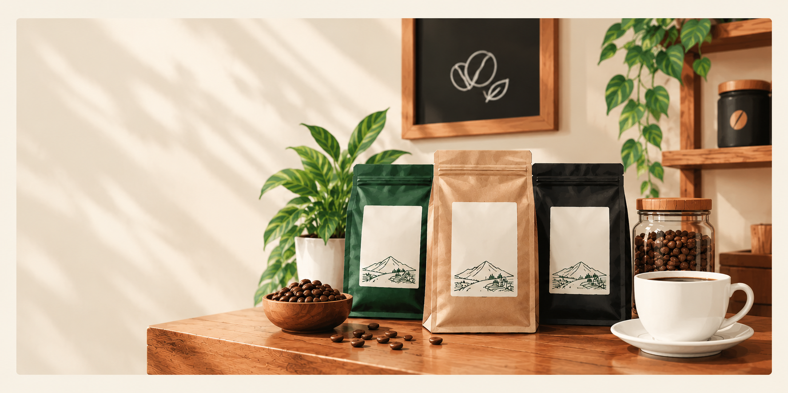

Kopi Garwo Signature
Kopi dengan cita rasa lembut dan cocok untuk menemani aktivitas.
Rp20.000
UMKM Batang
Kopi lokal pilihan untuk teman belajar, bekerja, dan berdiskusi.

Kopi dengan cita rasa lembut dan cocok untuk menemani aktivitas.
Rp20.000
Minuman kopi dengan perpaduan rasa americano dan peach.
Rp22.000
Minuman segar dengan perpaduan jeruk nipis, daun mint, dan es.
Rp18.000
Alamat: Jl. Jendral Sudirman, Batang